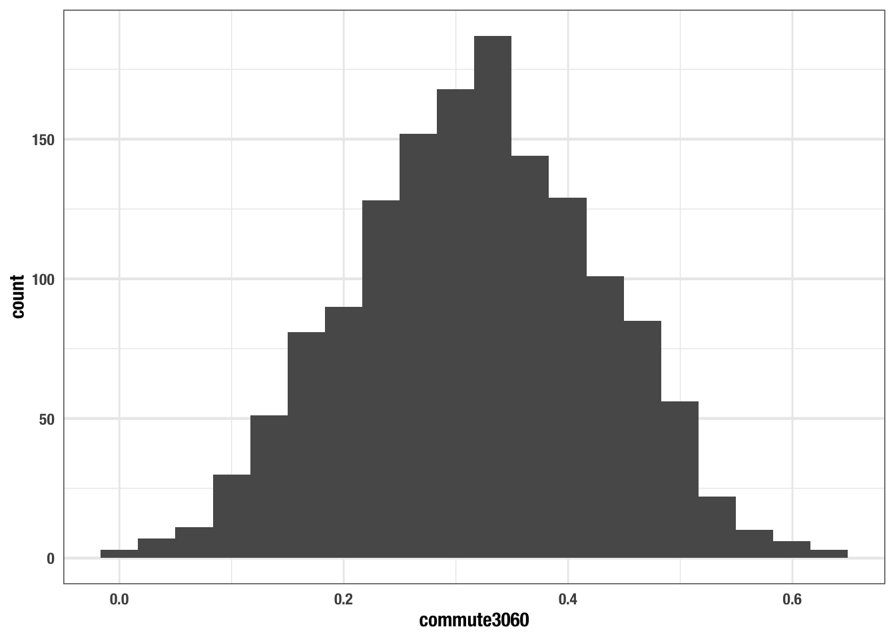

Chapter 11 Summary statistics
The last chapter we focused on the underlying data structures that we interact with in R. Most importantly we covered the atomic vector data structure and learned that the columns of a tibble are vectors. When we have been using mutate() to create new columns, we have actually been creating other vectors. When we have filtered data, we have checked the values of the underlying vectors to see if they have matched our specified conditions. Moving forward, we will begin to think about ways of summarizing our data. To do so we will be working with vectors more often. Being able to understand the role a vector plays in data frame operations will make this learning process even easier.
Let us start by asking the question “what is a statistic?” Very simply a statistic is a single number that is used to characterize a sample of data. Most often we see statistics used to describe central tendancy and spread—measures like the mean and standard deviation. However, the ways in which we can characterize a sample of data are not restricted to traditional frequentists statistics. We want to be more creative in the ways that we look at our data. In addition to evaluating central tendancy and spread we may find ourselves looking at the average word counts of tweets, or distances from the Boston Common, and so much more.
When we begin to summarize data, we are taking all observations or maybe a subset of observations and calculating one value to represent that sample. This is very important framing to have. Whenever we want to create an aggregate measure of our data there must be only one observation per-subset. Meaning, if you have a data frame with 150 rows and 3 groups within that, there ought to be only three resultant observations—though there may be many more variables.
Let us revisit the commute, and specifically the rate of commuters who travel between 30 and 60 minutes.
library(tidyverse)
commute <- read_csv("data/ACS_1317_TRACT.csv") %>%
select(
county,
starts_with("commute"),
starts_with("by"),
med_house_income
) It is of course of interest to identify the average rate of 30-60 minute commuting, as well as the standard deviation, and median. What does this look like and how is it done? Prior to measuring central tendency and spread, we begin by visualizing our data. The purpose of visualizing your data before hand is to give you an intuition of how it may behave and its shape.
ggplot(commute, aes(commute3060)) +
geom_histogram(bins = 20)
## Warning: Removed 14 rows containing non-finite values (stat_bin).
In the above histogram we can intuit a number of things. The distribution looks fairly normally distributed meaning that both the mean and median are likely to be close to eachother and are equally sound measures of center, most likely somewhere around 0.3. Secondly, due to the distribution’s rather round shape (or “fat tails”), it can be expected to have a rather large standard deviation. Once the intuition has been developed, one should calculate the relevant statistics to quantify these characteristics.
Let’s calculate the mean, median, standard deviation, and range of this single variable. When calculating statistics like the mean and standard deviation, we are calculating univariate statistics and as such, working with only one column (variable) at a time—this tends to be the case almost always.
We will first extract the commute3060 column as a vector using dplyr::pull().
Exercise: Read the help documentation for the functions
mean(),median(), andsd()to get a sense of how these functions work. Calculate the mean, median, and standard deviation ofcommute_rate.
The results of these functions bring good and bad news. The good news is that their output is a single value. The bad news is that the output is NA. To reiterate a previous point, NA will infect your analyses. The only way to get around this is to perform these calculations without them.
Note that each of the functions used above have an argument called na.rm. na.rm tells R to remove the NAs prior to calculation. We can recalculate these statistics with the na.rm argument set to TRUE.
mean(commute_rate, na.rm = TRUE)
## [1] 0.3165169
median(commute_rate, na.rm = TRUE)
## [1] 0.3179833
sd(commute_rate, na.rm = TRUE)
## [1] 0.110289Let us look at one last example: identifying the range. The range() function returns the minimum and the maximum values.
Note: by wrapping an assignment in parentheses, the resultant object will be printed to the console.
range() returned two values. This can be verified with the length() function.
A length two vector does not adhere to providing just out value. We will see why this is a problem illustrated in the next chapter. To recreate this, use the min() and max() functions.
Each of these statistics—mean, median, standard deviation, etc—are a way to characterize a larger sample of data. The lesson to take away here is that we will always need a single value when summarising data. Often we will be taking a column (vector) and calculating a single metric from that.
In the following chapter we will learn how to calculate summary statistics using the tidyverse.
- the lessons to take away from here is that:
- when creating aggregate measures, there can only be one observation per subset
- we are creating these aggregate measures we will be doing them on one column (aka a vector) at a time
- what is a summary stat?
- measures of central tendency
- measures of spread
- basic functions used
- mean, median, & sd
2020-02-20 twitter responses: https://twitter.com/JosiahParry/status/1230485651306549248?s=20
https://twitter.com/rhlvenugopal/status/1230489011073896449?s=20 - confidence intervals - standard error - effect size
https://twitter.com/thomas_mock/status/1230489855425175552?s=20 - missing values!